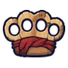 สนับมือไม้เบิร์ช | 1 | 40 | ไม่มีธาตุ | อีกาขโมยข้าวโพด ร่างขนแดง 0.25% |
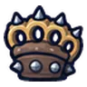 สนับมือหนัง | 1 | 37 | ไม่มีธาตุ | อาวุธเริ่มต้นของสาย (ได้ตอนเปลี่ยนอาชีพ) |
 สนับมือเขี้ยวหมูป่า สนับมือเขี้ยวหมูป่า | 4 | 41 | ดิน | หมูป่าเขี้ยวตัน ร่างเขาเงิน 0.25% |
| สนับมือขาแมงมุม | 7 | 42 | พิษ | แมงมุมถ้ำ 0.25% |
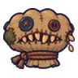 สนับมือกระสอบกัด | 10 | 42 | ดิน | กระสอบข้าวกัด ร่างกระสอบแดง 0.5% |
| สนับมืออุ้งเท้าหมี | 10 | 38 | ไม่มีธาตุ | ผึ้งทานตะวัน 0.12% |
 สนับมือฝักข้าวโพด สนับมือฝักข้าวโพด | 13 | 38 | ไม่มีธาตุ | อีกาขโมยข้าวโพด 0.12% |
 สนับมือถุงมือเกราะสนิม สนับมือถุงมือเกราะสนิม | 14 | 40 | ไม่มีธาตุ | ทหารเกราะสนิม ร่างเกราะทอง 0.5% |
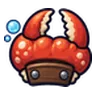 สนับมือก้ามปู | 16 | 36 | น้ำ | ปูก้ามโตลำธาร 0.06% |
| สนับมือสไลม์ใบไม้ | 19 | 36 | ลม | สไลม์ใบไม้ 0.06% |
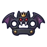 สนับมือราชาค้างคาว | 23 | 49 | มืด | ราตรีราชาค้างคาว 0.5% |
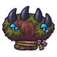 สนับมือกรงเล็บหมีตะไคร่ | 26 | 78 | ดิน | หมีตะไคร่ ร่างตะไคร่ชมพู 0.06% |
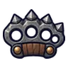 สนับมือเหล็กกล้า | 26 | 67 | ไม่มีธาตุ | นกฮูกหิน 0.25% |
 สนับมือกรงเล็บหมาป่า สนับมือกรงเล็บหมาป่า | 28 | 65 | มืด | ม้ากลวง 0.25% |
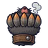 สนับมือกรงเล็บตุ่นควัน | 30 | 60 | ดิน | ตุ่นควันขาว ร่างน้ำค้างแข็ง 0.24% |
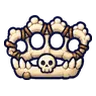 สนับมือกระดูกนิ้ว | 31 | 64 | ไม่มีธาตุ | โครงกระดูกทหาร 0.25% |
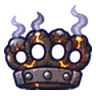 สนับมือถ่านคุ | 33 | 60 | ไฟ | แม่มดเทียนไข 0.12% |
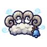 สนับมือเขาแกะเมฆ | 35 | 60 | ลม | ภูตลมใบมีด 0.12% |
 สนับมือดวงไฟผี สนับมือดวงไฟผี | 37 | 57 | วิญญาณ | คนงานเหมืองผี 0.06% |
| สนับมือราชาเห็ดเรืองแสง | 39 | 78 | พิษ | ราชาเห็ดเรืองแสง 0.5% |
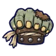 สนับมือซอมบี้ชาวนา | 41 | 60 | ไม่มีธาตุ | ซอมบี้ชาวนา 0.12% |
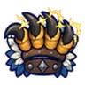 สนับมือกรงเล็บอินทรี | 43 | 57 | ลม | อินทรีพายุ 0.06% |
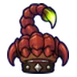 สนับมือแมงป่องแดง | 45 | 57 | พิษ | แมงป่องแดง 0.06% |
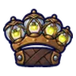 สนับมือหิ่งห้อย | 47 | 60 | ศักดิ์สิทธิ์ | ผีเสื้อราตรีเรืองแสง 0.12% |
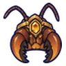 สนับมือนางพญามด | 49 | 78 | ดิน | รังนางพญามด 0.5% |
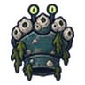 สนับมือกระดองเพรียงเกาะ | 51 | 92 | น้ำ | ปูแม่น้ำขึ้น ร่างม่วงหม่น 0.5% |
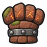 สนับมือหินโกเลม | 51 | 92 | ดิน | ตุ่นขุดผลึก 0.25% |
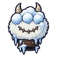 สนับมือเยติลูกหิมะ | 51 | 82 | น้ำ | เยติลูกหิมะ 0.12% |
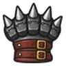 สนับมือหนามเหล็ก | 54 | 89 | ไม่มีธาตุ | หนังสือบิน 0.25% |
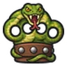 สนับมืองูหนอง | 56 | 82 | พิษ | งูหนองพิษ 0.12% |
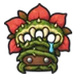 สนับมือดอกไม้กินคน | 59 | 82 | ไม่มีธาตุ | ดอกไม้กินคน 0.12% |
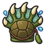 สนับมือกัปปะ | 61 | 82 | น้ำ | หยดหมึกแตกตัว 0.12% |
| สนับมืออัศวินกระดูก | 64 | 82 | ไม่มีธาตุ | อัศวินกระดูก 0.12% |
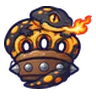 สนับมือซาลาแมนเดอร์ | 66 | 78 | ไฟ | ซาลาแมนเดอร์ 0.06% |
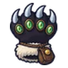 สนับมืออุ้งแมวล้วงกระเป๋า | 68 | 78 | มืด | แมวล้วงกระเป๋า ร่างขนทอง 0.12% |
| สนับมือหมอกเงา | 68 | 78 | มืด | ม้าลากเกวียนกลวง 0.06% |
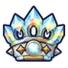 สนับมือปริซึม | 71 | 78 | ศักดิ์สิทธิ์ | หุ่นของคาร์ดินัล 0.06% |
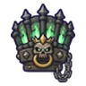 สนับมือราชาสุสาน | 74 | 107 | วิญญาณ | บัลลังก์ราชาสุสาน 0.5% |
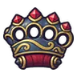 สนับมือเหล็กครามทอง | 76 | 110 | ไม่มีธาตุ | ดาวตกจิ๋ว 0.25% |
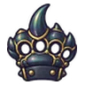 สนับมือเขาด้วงแรด | 78 | 113 | ไม่มีธาตุ | ด้วงแรดยักษ์ 0.25% |
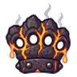 สนับมือโกเลมลาวา | 81 | 116 | ไฟ | โกเลมลาวา 0.25% |
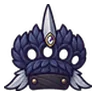 สนับมือนกกระสาเงา | 83 | 104 | มืด | นกกระสาเงา 0.12% |
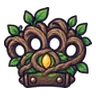 สนับมือรากไม้โบราณ | 85 | 104 | ดิน | ต้นไม้ยักษ์โบราณ 0.12% |
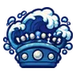 สนับมือคลื่นยักษ์ | 87 | 99 | น้ำ | กัปปะหนองหมอก 0.06% |
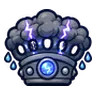 สนับมือพายุฟ้าคำราม | 90 | 99 | ลม | เทอโรซอร์ 0.06% |
| สนับมือกลุ่มดาว | 92 | 99 | ศักดิ์สิทธิ์ | ผู้เฝ้าพื้นแก้ว 0.06% |
| สนับมือมังกรลาวา | 95 | 136 | ไฟ | หัวใจมังกรลาวา 0.5% |
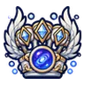 สนับมือทางช้างเผือก | 99 | 147 | วิญญาณ | ดรอปทั่วโลก Lv 90+ |